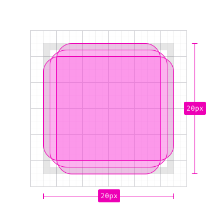
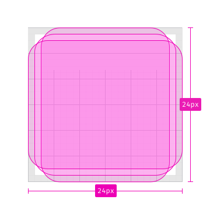
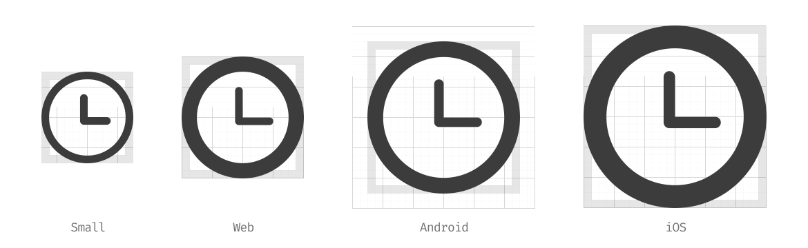

Iconography
Firefox icons are informative, fun and friendly.
Icon Construction
Use universal metaphors that everyone around the world can quickly identify. Aim for a design most people can interpret correctly and won’t find offensive. Do not focus on a secondary or obscure aspect of an element. Remember that too many details can make an icon appear sloppy or unreadable.
Looking for icons? Check out all the existing Firefox Icons.
Check the Firefox Icons Template.
Grid
Most Firefox for desktop icons live on a 16×16 pixel grid. Some specific small icons, used in rare cases, live on a 12×12 pixel grid. Keep icon shape weighted towards the middle area of the grid, reserving the outer 1px margin for visual weighting and maintaining relative aspect ratios. Designing with the pixel grid on helps ensure that icons will not appear fuzzy in production.
In Sketch, select the shape and then select Layer → Round to Nearest Pixel Edge. Sketch will automatically align the edges with the pixel grid.
In Adobe Illustrator, use View → Pixel Preview to see your design on a pixel grid. Select a shape and use Object → Make Pixel Perfect to set position and size to the nearest full pixel. Or click the Snap to Pixel icon in the Control panel to turn on snapping permanently.
Firefox for Android icons are 20×20, with a bounding box of 24×24, according to Material Design specs. Firefox for iOS icons live on a 24×24 grid.


Shape
Use positive and negative space to create the icon shape. When lines principally shape your icon, use a 2px stroke for the foundation and a 1px line for extra details. Rounded end caps and rounded line joins keep the icon smooth and friendly. On 12×12 icons, consider whether to use a 1px stroke or to go solid.
When you have two rounded corners running parallel, the outer corner has a larger radius, set on 3px, than the one on the inside, set on 1px.
 Do
Do
 Don’t
Don’t
On iOS, use 3px strokes for the foundation and 2px strokes for the details to keep a consistent look and feel across platforms. Align icons in the northwest corner when required.

Export Your Icon
Before exporting your icons, be sure to expand all the shapes and strokes overlapping each other. Remember to remove unnecessary anchor points to keep the icon as simple as possible.
Name the artboard with the icon name. The name should describe the action of the icon, and not the icon itself. For example, when using a star as a metaphor for bookmarking, use bookmark, and not star as the name. Add a hyphen (-) to underline variations in the icon.

Do

Don’t
Finally, save your icon as SVG (and .png if you’re working on mobile).
If you are using Sketch, be sure to install the SVGO Compressor by Bohemian Coding.
Color

Use color semantically. Adapt it according to your background, keeping the contrast high.
Use Grey 90 a80 rgba(12, 12, 13, 0.8) on light backgrounds.

Use Grey 10 a80 rgba(249, 249, 250, 0.8) on dark backgrounds.

Use Green 90 #003706 on a light green background. Green colors are usually associated with success states.

Use Yellow 60 #d7b600. Yellow icons are often used to indicate warnings.

Use Red 60 #d70022 on a trasparent background. Red on icons is often used to indicate errors.
States

The different states in a ghost button.
When an icon is used to execute an action, we refer to it as ghost button.
Accessibility
All icons should have a text-based equivalent for screen readers. If your icon allows interactivity, give it a text label.